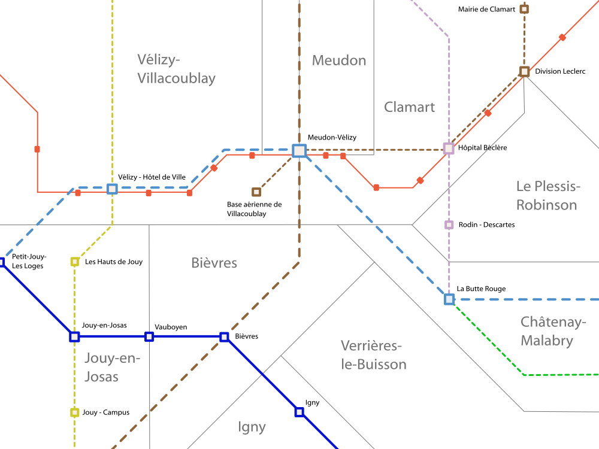

Meudon-Vélizy-Clamart
Communes de Vélizy-Villacoublay, Meudon, Clamart, Châtenay-Malabry


Le pole Meudon-Vélizy-Clamart dont le centre est le centre commercial Vélizy 2 est un bassin d'emploi tertiaire de la banlieue sud-ouest de Paris. Situé au sommet de la butte de Vélizy il est actuellement très mal relié à Paris et au reste de l'Ile-de-France par les transports en commun mais très accessible par en voiture par l'autoroute A86 et la nationale 118 qui sont régulièrement saturées.
La création du tramway T6 a apporté une grande amélioration mais elle reste insuffisante comme en témoigne la saturation de la nationale 118.
Pour pallier à ce problème de desserte, le Plan Ile-de-France propose la création du RER G pour soulager la N118 et l'extension du RER B vers Saint-Quentin-en-Yvelines pour soulager l'autoroute A86. Ces deux projets complétés par l'extension des lignes 8, 9 et 11 apporteront une solution définitive au problème de l'accessiblité de ce secteur par les transports en commun.
Le projet du Grand Orlyval permettra aux habitants de se rendre très simplement à l'aéroport d'Orly.
En complément, le Plan Ile-de-France propose que la N118 soit enfouie avec la création du RER G ce qui permettrait de restaurer la continuité de la forêt de Meudon et supprimer la descente dangereuse de Sèvres.
Carte
{kind=link}

Cliquer pour agrandir
Projets associés à ce pôle
Stations incluses dans le périmètre
| Nom | Correspondances | Communes |
|---|---|---|
| Base Aérienne de Villacoublay | ||
| La Butte rouge | ||
| Hôpital Antoine Béclère | ||
| Meudon - Vélizy | ||
| Le Plessis-Robinson - Rodin-Descartes | ||
| Vélizy - l'Onde - Hôtel de Ville |